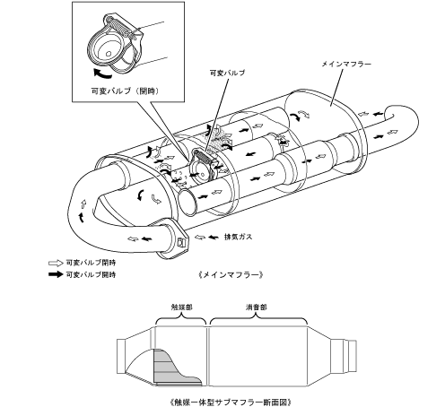

| Muffler |
| ● |
A 2WAY exhaust system has been adopted for the main muffler to improve exhaust efficiency and engine output while ensuring quietness. In the 2WAY exhaust system, a variable valve that adjusts the exhaust gas passage area according to exhaust gas pressure is provided inside the main muffler. The variable valve is kept closed by a return spring during idling and at low engine speeds.
|
| ● |
A sub muffler with an integrated catalyst has been adopted, securing underfloor space and improving exhaust silencing.
|
 |
 2WAY Exhaust System Operation 2WAY Exhaust System Operation
|